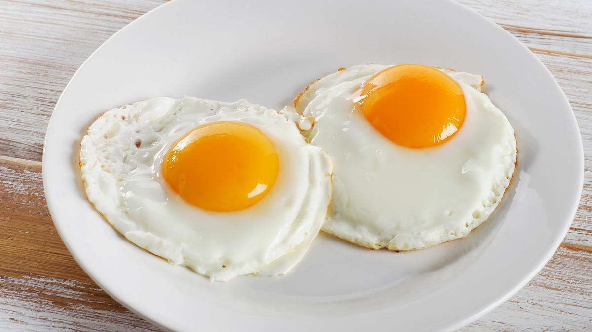

Receta huevos fritos

Descripción:
Huevo que se introduce en un baño de fritura o en una sartén que contenga aceite,
manteca de cerdo o grasa de oca muy caliente. La clara queda coagulada y se dora
ligeramente y la yema no se cuece.
Ingredientes:
Pasos:
- Abrir el huevo sobre un cuenco
- Añadir el aceite a la sartén hasta cubrir el fondo. Poner a calentar la sartén a fuego alto
-
Cuando el aceite esté caliente, pero sin humear, añadir el huevo.
Dejar que se vaya formando la puntilla. A continuación,
inclinar un poco la sartén y dejar que el aceite caliente suba
por la superficie del huevo sin que alcance la yema,
para cocinar la parte superior. Cuando toda la parte superior esté blanca,
excepto la yema, retirar de la sartén. Añadir sal a la yema y
servir inmediatamente